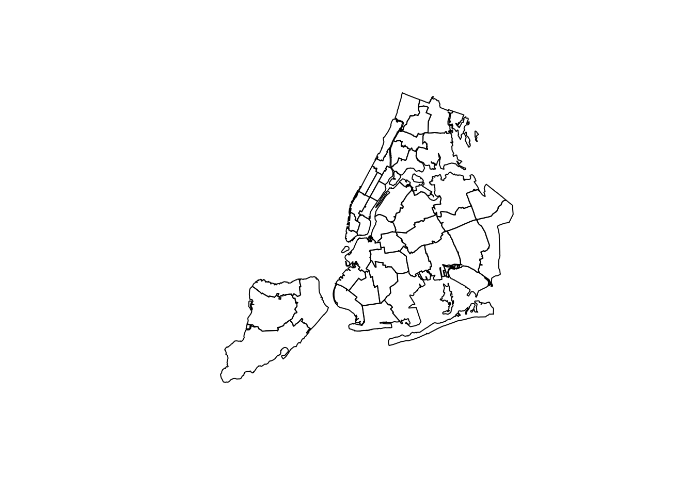
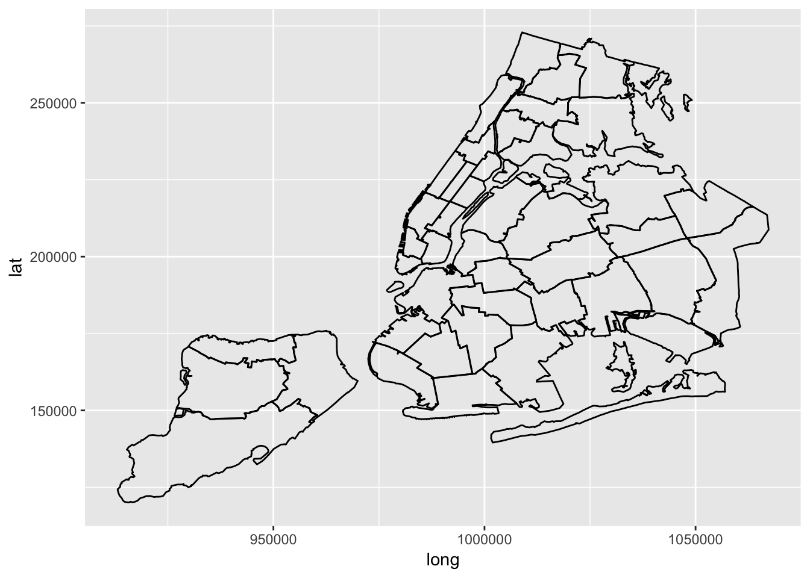
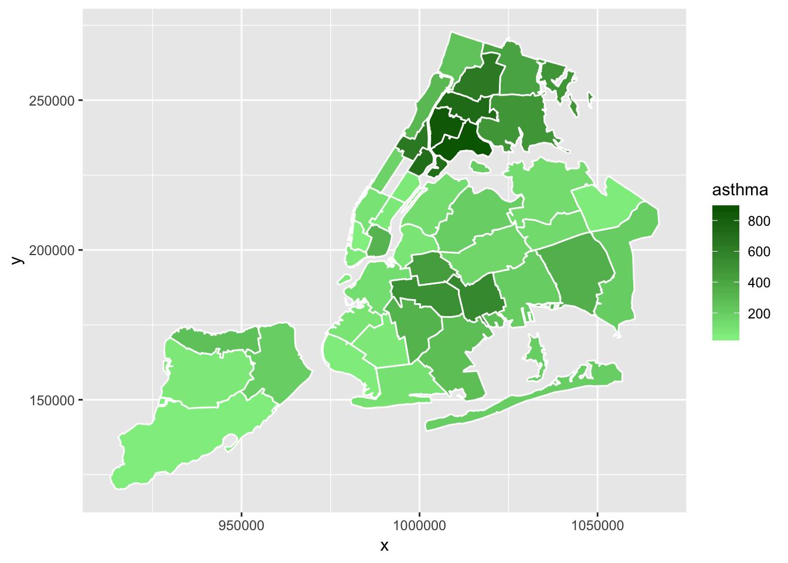

title: “map” author: “Qi Shao” date: “12/2/2018” output: html_document —
mydat = rgdal::readOGR("./UHF42/UHF_42_DOHMH.shp")## OGR data source with driver: ESRI Shapefile
## Source: "/Users/ada/Documents/Ada Documents/Master in Columbia/Courses/Data Science/R programming/homework/p8105_final_project/UHF42/UHF_42_DOHMH.shp", layer: "UHF_42_DOHMH"
## with 43 features
## It has 8 fieldsplot(mydat)
ggplot(data = mydat, mapping = aes(x = long, y = lat, group = group)) +
geom_polygon(data = mydat, fill = NA, color = "white") +
geom_polygon(color = "black", fill = NA) ## Regions defined for each Polygons
## Regions defined for each Polygons
map_data = fortify(mydat) %>%
dplyr::select(id, everything() )%>%
nest(long:group)## Regions defined for each Polygonsmap_data$uhf = mydat$UHFCODE
map_data = map_data %>%
unnest %>%
dplyr::select(-id) %>%
dplyr::select(id = uhf, everything()) %>%
dplyr::select(long, lat, everything())
names(map_data)[1:2] = c("x","y") asthma_air = read.csv("./data/asthma_air/Data.csv") %>%
filter(str_detect(year_description, "^20|^An")) %>%
mutate(year_description = str_remove(year_description, "Annual Average ")) %>%
filter(year_description == 2015)
sulfur_dioxide= read.csv("./data/asthma_air/Data.csv") %>%
filter(name == "Sulfur Dioxide (SO2)") %>%
filter(year_description == "Winter 2014-15")
ozone= read.csv("./data/asthma_air/Data.csv") %>%
filter(name == "Ozone (O3)") %>%
filter(year_description == "Summer 2015")
data = rbind(asthma_air,sulfur_dioxide,ozone)
asthma_air1 = data %>%
dplyr::select(name, description, Measure, geo_entity_name, geo_entity_id, year = year_description, data_value) %>%
janitor::clean_names() %>%
filter(measure %in% c("Mean", "Rate", "Number", "Percent", "Age-Adjusted Percent", "Age-Adjusted Rate ")) %>%
mutate(name_measure=str_c(name,"-",measure)) %>%
dplyr::select(-name, -measure, -description, -year) %>%
spread(key = name_measure, value = data_value) %>%
janitor::clean_names()
asthma_map = asthma_air1 %>%
dplyr::select (id = geo_entity_id, asthma = asthma_emergency_department_visits_children_0_to_4_yrs_old_rate)asthma_air = read.csv("./data/asthma_air/Data.csv") %>%
filter(str_detect(year_description, "^20|^An")) %>%
mutate(year_description = str_remove(year_description, "Annual Average "))
asthma_air1 = asthma_air %>%
dplyr::select(name, description, Measure, geo_entity_name, geo_entity_id, year = year_description, data_value) %>%
janitor::clean_names() %>%
filter(measure %in% c("Mean", "Rate", "Number", "Percent", "Age-Adjusted Percent", "Age-Adjusted Rate ")) %>%
mutate(name_measure=str_c(name,"-",measure)) %>%
filter(year == 2015) %>%
dplyr::select(-name, -measure, -description) %>%
spread(key = name_measure, value = data_value) ggplot(asthma_map) +
geom_map(aes(map_id = id, fill = asthma), color = "white", map = map_data) +
scale_fill_gradient(high = "darkgreen",low = "lightgreen") +
expand_limits(map_data)